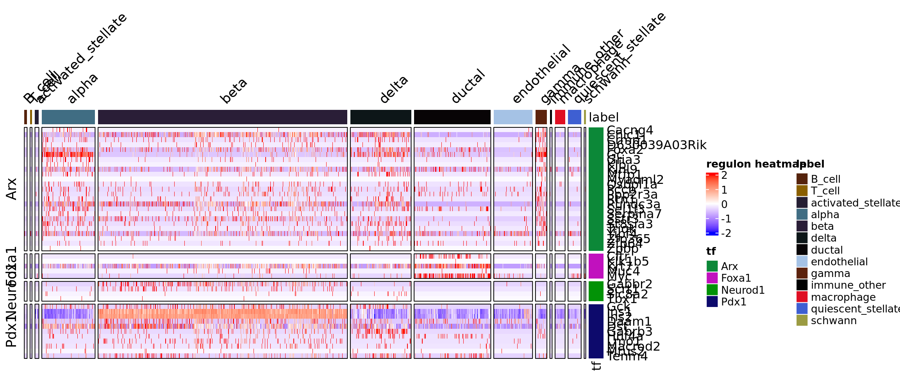
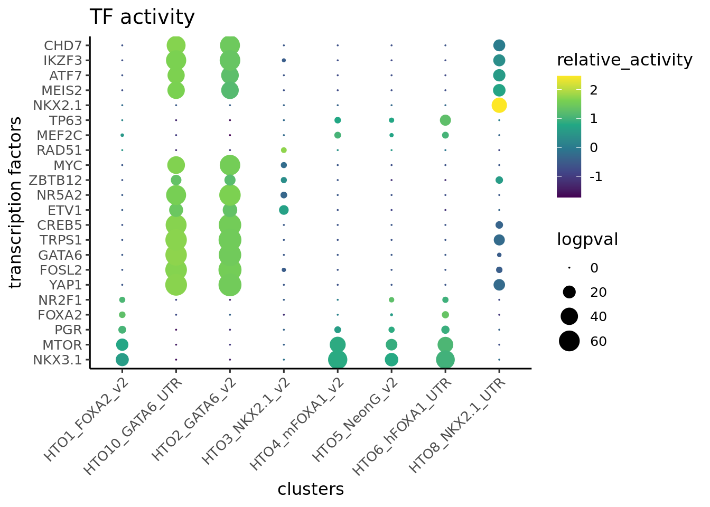
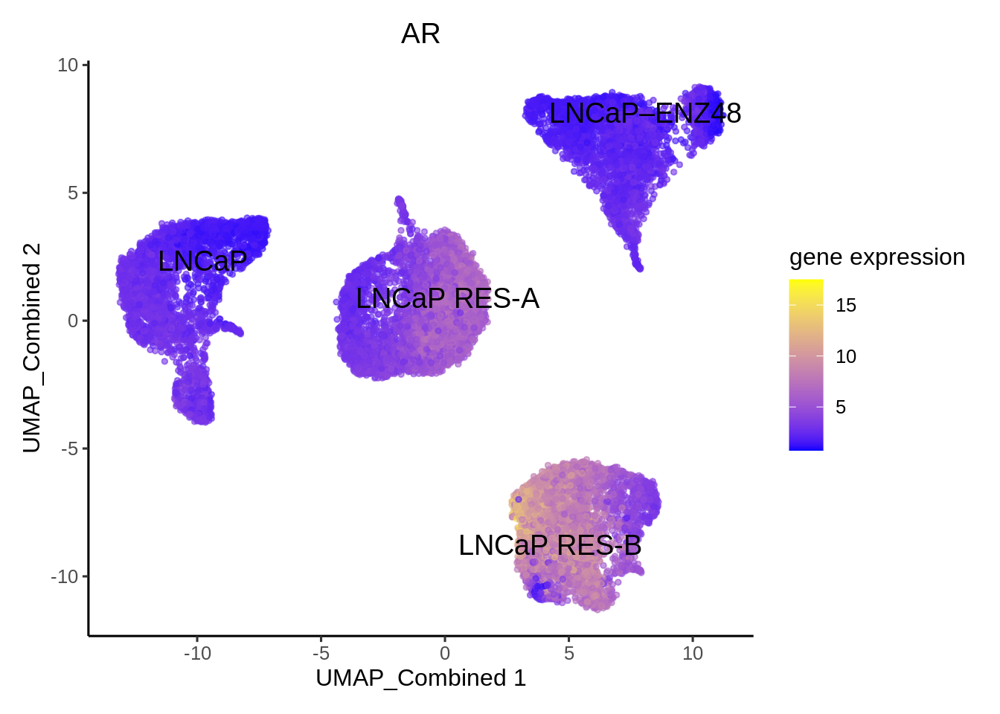
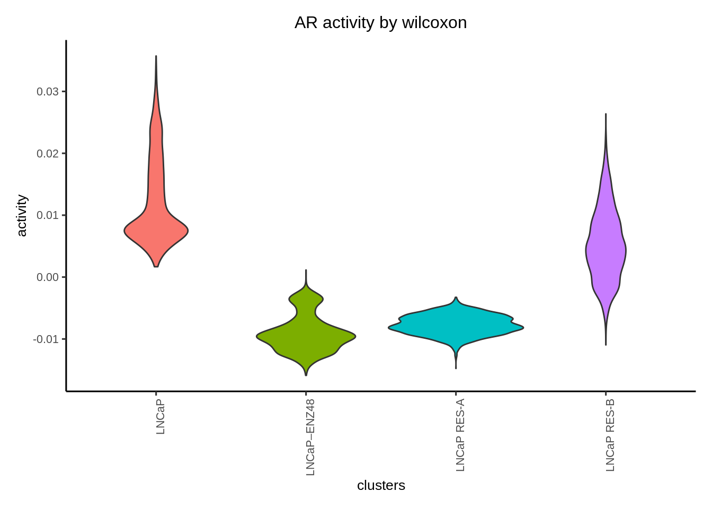
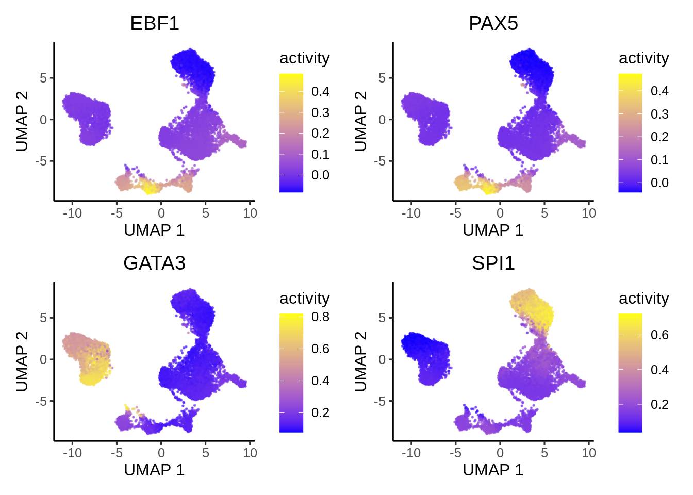
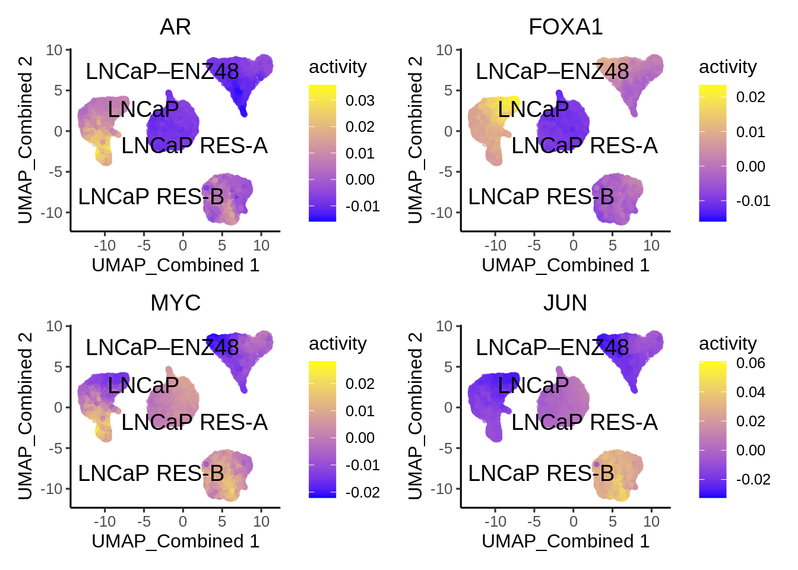

4 Prostate cancer cells
This tutorial walks through an example of TF activity inference in unpaired scATACseq/scRNAseq of parental LNCaP cells treated with DMSO, Enzalutamide and Enza resistant cells. The dataset was taken from Taavitsainen et al GSE168667 and GSE168668.
4.1 Data preparation
Download the example dataset from scMultiome package
library(epiregulon)
mae <- scMultiome::prostateENZ()## snapshotDate(): 2023-10-24## see ?scMultiome and browseVignettes('scMultiome') for documentation## loading from cache# Load peak matrix
PeakMatrix <- mae[["PeakMatrix"]]
# Load expression matrix
GeneExpressionMatrix <- mae[["GeneIntegrationMatrix"]]
# Add gene symbols to rownames
rownames(GeneExpressionMatrix) <- rowData(GeneExpressionMatrix)$name
# Add cell label
GeneExpressionMatrix$label <- GeneExpressionMatrix$Cells
GeneExpressionMatrix$label[GeneExpressionMatrix$Treatment == "enzalutamide 48h"] <- "LNCaP–ENZ48"
GeneExpressionMatrix$label <- factor(GeneExpressionMatrix$label,
levels = c("LNCaP", "LNCaP–ENZ48", "LNCaP RES-A", "LNCaP RES-B"))
rownames(GeneExpressionMatrix) <- rowData(GeneExpressionMatrix)$name
# dimensional reduction matrix
reducedDimMatrix <- reducedDim(GeneExpressionMatrix, "iLSI_Combined")Since gene expression is library size normalized we further transform it to logcounts by adding a pseudocount of 1 and taking log2.
assay(GeneExpressionMatrix, "logcounts") <- as(log2(assay(GeneExpressionMatrix)+1), "CsparseMatrix")Visualize singleCellExperiment by UMAP
library(epiregulon.extra)
scater::plotReducedDim(GeneExpressionMatrix,
dimred = "UMAP_Combined",
text_by = "label",
colour_by = "label")
4.2 Quick start
4.2.1 Retrieve bulk TF ChIP-seq binding sites
First, we retrieve the information of TF binding sites collected from Cistrome and ENCODE ChIP-seq, which are hosted on Genomitory. Currently, human genomes HG19 and HG38 and mouse mm10 are available.
grl <- getTFMotifInfo(genome = "hg38")## snapshotDate(): 2023-10-24## see ?scMultiome and browseVignettes('scMultiome') for documentation## loading from cachehead(grl)## GRangesList object of length 6:
## $`5-hmC`
## GRanges object with 24048 ranges and 0 metadata columns:
## seqnames ranges strand
## <Rle> <IRanges> <Rle>
## [1] chr1 10000-10685 *
## [2] chr1 13362-13694 *
## [3] chr1 29631-29989 *
## [4] chr1 40454-40754 *
## [5] chr1 135395-135871 *
## ... ... ... ...
## [24044] chrY 56864377-56864627 *
## [24045] chrY 56876124-56876182 *
## [24046] chrM 84-2450 *
## [24047] chrM 13613-14955 *
## [24048] chrM 15134-16490 *
## -------
## seqinfo: 25 sequences from an unspecified genome; no seqlengths
##
## ...
## <5 more elements>4.2.2 Link ATAC-seq peaks to target genes
Next, we compute peak to gene correlations using a custom algorithm that has similar performance to ArchR’s P2G function.
p2g <- calculateP2G(peakMatrix = PeakMatrix,
expMatrix = GeneExpressionMatrix,
reducedDim = reducedDimMatrix,
exp_assay = "normalizedCounts")## Using epiregulon to compute peak to gene links...## performing k means clustering to form metacells## Computing correlationhead(p2g)## DataFrame with 6 rows and 8 columns
## idxATAC chr start end idxRNA target Correlation distance
## <integer> <character> <integer> <integer> <integer> <array> <matrix> <integer>
## 1 76 chr1 1109628 1110128 23 SDF4 0.520444 121703
## 2 81 chr1 1130038 1130538 23 SDF4 0.515266 101293
## 3 82 chr1 1132510 1133010 23 SDF4 0.511392 98821
## 4 83 chr1 1133314 1133814 23 SDF4 0.562994 98017
## 5 86 chr1 1157332 1157832 23 SDF4 0.525309 73999
## 6 86 chr1 1157332 1157832 26 UBE2J2 0.545182 1158534.2.3 Add TF motif binding to peaks
The next step is to add the TF motif binding information by overlapping the regions of the peak matrix with the bulk chip-seq database loaded in 2. The user can supply either an archR project path and this function will retrieve the peak matrix, or a peakMatrix in the form of a Granges object or RangedSummarizedExperiment.
overlap <- addTFMotifInfo(grl = grl, p2g = p2g, peakMatrix = PeakMatrix)## Computing overlap...## Success!4.2.4 Generate regulons
A long format dataframe, representing the inferred regulons, is then generated. The dataframe consists of three columns:
- tf (transcription factor)
- target gene
- peak to gene correlation between tf and target gene
regulon <- getRegulon(p2g = p2g, overlap = overlap, aggregate = FALSE)
head(regulon)## DataFrame with 6 rows and 10 columns
## idxATAC chr start end idxRNA target distance idxTF tf corr
## <integer> <character> <integer> <integer> <integer> <character> <integer> <integer> <character> <matrix>
## 1 76 chr1 1109628 1110128 23 SDF4 121703 8 AFF1 0.520444
## 2 76 chr1 1109628 1110128 23 SDF4 121703 25 AR 0.520444
## 3 76 chr1 1109628 1110128 23 SDF4 121703 28 ARID1B 0.520444
## 4 76 chr1 1109628 1110128 23 SDF4 121703 49 ATF1 0.520444
## 5 76 chr1 1109628 1110128 23 SDF4 121703 55 ATF7 0.520444
## 6 76 chr1 1109628 1110128 23 SDF4 121703 80 BCOR 0.520444Epiregulon computes weights using either correlation, linear regression, mutual information, log fold change or wilcoxon rank sum test. The choice of methods depends on the datasets. Correlation works best when increased TF activity results from increased TF expression, such in the case of normal development. The user has a choice between computing the correlation of TF expression vs target gene expression by setting method = "corr", or the product of TF expression and chromatin accessibility at TF-bound regulatory elements vs target gene expression by setting method = "corr" and "tf_re.merge = TRUE.
In the case of drug treatment, however, the activity of TF is suppressed often not by downregulation of the TF gene expression, but by direct interference of the TF protein function. In this dataset, the drug enzalutamide blocks the ligand binding domain of the androgen receptor and prevents it from binding to the chromatin. As a result, while the AR gene expression stays the same, the chromatin accessibility of AR, as computed by chromVar in the ArchR package, is greatly reduced by 48 hour treatment of enzalutamide.
First, we visualize the AR expression and observed that enzalutamide did not decrease AR expression.
plotActivityDim(sce = GeneExpressionMatrix,
activity_matrix = assay(GeneExpressionMatrix, "logcounts"),
tf = "AR",
dimtype = "UMAP_Combined",
label = "label",
point_size = 1,
legend.label = "gene expression")
Then we use the chromVarMatrix to visualize the chromatin accessibility at AR bound sites. We can see that 48 hour of enzalutamide treatment reduced chromatin accessibility at AR bound sites
chromVarMatrix <- getMatrixFromProject(
ArchRProj = proj,
useMatrix = "MotifMatrix",
useSeqnames = NULL,
verbose = TRUE,
binarize = FALSE,
threads = 1
)
plotActivityDim(sce = GeneExpressionMatrix,
activity_matrix = assay(chromVarMatrix, "z"),
tf = "AR_689",
dimtype = "UMAP_Combined",
label = "label",
point_size = 1,
legend.label = "chromVar")Therefore, we consider the choice of the wilcoxon test which compare target gene expression in cells meeting both the TF expression and accessibility cutoffs vs cells failing either the TF expression or/and accessibility cutoffs. We also compare the output of wilcoxon vs corr.
regulon.w.wilcox <- addWeights(regulon = pruned.regulon,
expMatrix = GeneExpressionMatrix,
exp_assay = "logcounts",
peakMatrix = PeakMatrix,
peak_assay = "counts",
clusters = GeneExpressionMatrix$Sample,
method = "wilcoxon")## adding weights using wilcoxon...regulon.w.corr <- addWeights(regulon = pruned.regulon,
expMatrix = GeneExpressionMatrix,
exp_assay = "logcounts",
peakMatrix = PeakMatrix,
peak_assay = "counts",
clusters = GeneExpressionMatrix$Sample,
method = "corr")## adding weights using corr...## calculating average expression across clusters...## computing weights...regulon.w.corr.re <- addWeights(regulon = pruned.regulon,
expMatrix = GeneExpressionMatrix,
exp_assay = "logcounts",
peakMatrix = PeakMatrix,
peak_assay = "counts",
clusters = GeneExpressionMatrix$Sample,
method = "corr",
tf_re.merge = TRUE)## adding weights using corr...## calculating average expression across clusters...## computing weights...4.2.5 Calculate TF activity
Finally, the activities for a specific TF in each cell are computed by averaging the weighted expressions of target genes linked to the TF. \[y=\frac{1}{n}\sum_{i=1}^{n} x_i * weight_i\] where \(y\) is the activity of a TF for a cell \(n\) is the total number of targets for a TF \(x_i\) is the log count expression of target i where i in {1,2,…,n} \(weight_i\) is the weight of TF and target i
We calculate three different activities corresponding to the different weighted regulons
score.combine.wilcox <- calculateActivity(expMatrix = GeneExpressionMatrix,
exp_assay = "logcounts",
regulon = regulon.w.wilcox,
normalize = TRUE,
mode = "weight",
method = "weightedMean")## calculating TF activity from regulon using weightedmean## Warning in calculateActivity(expMatrix = GeneExpressionMatrix, exp_assay = "logcounts", : The weight column
## contains multiple subcolumns but no cluster information was provided. Using first column to compute activity...## aggregating regulons...## creating weight matrix...## calculating activity scores...## normalize by mean...## normalize by the number of targets...score.combine.corr <- calculateActivity(expMatrix = GeneExpressionMatrix,
exp_assay = "logcounts",
regulon = regulon.w.corr,
normalize = TRUE,
mode = "weight",
method = "weightedMean")## calculating TF activity from regulon using weightedmean## aggregating regulons...## creating weight matrix...## calculating activity scores...## normalize by mean...## normalize by the number of targets...score.combine.corr.re <- calculateActivity(expMatrix = GeneExpressionMatrix,
exp_assay = "logcounts",
regulon = regulon.w.corr.re,
normalize = TRUE,
mode = "weight",
method = "weightedMean")## calculating TF activity from regulon using weightedmean## aggregating regulons...## creating weight matrix...## calculating activity scores...## normalize by mean...## normalize by the number of targets...We visualize the different activities side by side
plotActivityViolin(activity_matrix = score.combine.wilcox,
tf = c( "AR"),
clusters = GeneExpressionMatrix$label) + ggtitle ("AR activity by wilcoxon")
plotActivityViolin(activity_matrix = score.combine.corr,
tf = c( "AR"),
clusters = GeneExpressionMatrix$label) + ggtitle ("AR activity by corr TF vs TG")
plotActivityViolin(activity_matrix = score.combine.corr.re,
tf = c( "AR"),
clusters = GeneExpressionMatrix$label) + ggtitle ("AR activity by corr TF*RE vs TG")
4.2.6 Perform differential activity
markers <- findDifferentialActivity(activity_matrix = score.combine.wilcox,
groups = GeneExpressionMatrix$label,
pval.type = "some",
direction = "up",
test.type = "t")Take the top TFs
markers.sig <- getSigGenes(markers, topgenes = 8 )## Using a logFC cutoff of 0 for class LNCaP## Using a logFC cutoff of 0 for class LNCaP–ENZ48## Using a logFC cutoff of 0 for class LNCaP RES-A## Using a logFC cutoff of 0 for class LNCaP RES-B4.2.7 Visualize the results
First visualize the known differential TFs by bubble plot
plotBubble(activity_matrix = score.combine.wilcox,
tf = c("AR","FOXA1", "MYC","JUN"),
clusters = GeneExpressionMatrix$label)
Then visualize the most differential TFs by clusters
plotBubble(activity_matrix = score.combine.wilcox,
tf = markers.sig$tf,
clusters = GeneExpressionMatrix$label)
Visualize the known differential TFs by UMAP
plotActivityDim(sce = GeneExpressionMatrix,
activity_matrix = score.combine.wilcox,
tf = c( "AR", "FOXA1", "MYC", "JUN"),
dimtype = "UMAP_Combined",
label = "label",
point_size = 1,
ncol = 2,
nrow = 2)
Visualize the newly discovered differential TFs by UMAP
plotActivityDim(sce = GeneExpressionMatrix,
activity_matrix = score.combine.wilcox,
tf = c("AFF4","ASH1L","DAXX","MXD4"),
dimtype = "UMAP_Combined",
label = "label",
point_size = 1,
ncol = 2,
nrow = 2)
Visualize regulons by heatmap
rowData(GeneExpressionMatrix) <- NULL
plotHeatmapRegulon(sce=GeneExpressionMatrix,
tfs= c( "AR", "FOXA1", "MYC", "JUN"),
regulon=regulon.w.wilcox,
regulon_cutoff=0.1,
downsample=1000,
cell_attributes="label",
col_gap="label",
exprs_values="logcounts",
name="regulon heatmap")## Warning in grid.Call(C_textBounds, as.graphicsAnnot(x$label), x$x, x$y, : conversion failure on 'LNCaP–ENZ48' in
## 'mbcsToSbcs': dot substituted for <e2>## Warning in grid.Call(C_textBounds, as.graphicsAnnot(x$label), x$x, x$y, : conversion failure on 'LNCaP–ENZ48' in
## 'mbcsToSbcs': dot substituted for <80>## Warning in grid.Call(C_textBounds, as.graphicsAnnot(x$label), x$x, x$y, : conversion failure on 'LNCaP–ENZ48' in
## 'mbcsToSbcs': dot substituted for <93>## Warning in grid.Call(C_textBounds, as.graphicsAnnot(x$label), x$x, x$y, : conversion failure on 'LNCaP–ENZ48' in
## 'mbcsToSbcs': dot substituted for <e2>## Warning in grid.Call(C_textBounds, as.graphicsAnnot(x$label), x$x, x$y, : conversion failure on 'LNCaP–ENZ48' in
## 'mbcsToSbcs': dot substituted for <80>## Warning in grid.Call(C_textBounds, as.graphicsAnnot(x$label), x$x, x$y, : conversion failure on 'LNCaP–ENZ48' in
## 'mbcsToSbcs': dot substituted for <93>## Warning in grid.Call(C_textBounds, as.graphicsAnnot(x$label), x$x, x$y, : conversion failure on 'LNCaP–ENZ48' in
## 'mbcsToSbcs': dot substituted for <e2>## Warning in grid.Call(C_textBounds, as.graphicsAnnot(x$label), x$x, x$y, : conversion failure on 'LNCaP–ENZ48' in
## 'mbcsToSbcs': dot substituted for <80>## Warning in grid.Call(C_textBounds, as.graphicsAnnot(x$label), x$x, x$y, : conversion failure on 'LNCaP–ENZ48' in
## 'mbcsToSbcs': dot substituted for <93>## Warning in grid.Call(C_textBounds, as.graphicsAnnot(x$label), x$x, x$y, : conversion failure on 'LNCaP–ENZ48' in
## 'mbcsToSbcs': dot substituted for <e2>## Warning in grid.Call(C_textBounds, as.graphicsAnnot(x$label), x$x, x$y, : conversion failure on 'LNCaP–ENZ48' in
## 'mbcsToSbcs': dot substituted for <80>## Warning in grid.Call(C_textBounds, as.graphicsAnnot(x$label), x$x, x$y, : conversion failure on 'LNCaP–ENZ48' in
## 'mbcsToSbcs': dot substituted for <93>## Warning in grid.Call(C_textBounds, as.graphicsAnnot(x$label), x$x, x$y, : conversion failure on 'LNCaP–ENZ48' in
## 'mbcsToSbcs': dot substituted for <e2>## Warning in grid.Call(C_textBounds, as.graphicsAnnot(x$label), x$x, x$y, : conversion failure on 'LNCaP–ENZ48' in
## 'mbcsToSbcs': dot substituted for <80>## Warning in grid.Call(C_textBounds, as.graphicsAnnot(x$label), x$x, x$y, : conversion failure on 'LNCaP–ENZ48' in
## 'mbcsToSbcs': dot substituted for <93>## Warning in grid.Call(C_textBounds, as.graphicsAnnot(x$label), x$x, x$y, : conversion failure on 'LNCaP–ENZ48' in
## 'mbcsToSbcs': dot substituted for <e2>## Warning in grid.Call(C_textBounds, as.graphicsAnnot(x$label), x$x, x$y, : conversion failure on 'LNCaP–ENZ48' in
## 'mbcsToSbcs': dot substituted for <80>## Warning in grid.Call(C_textBounds, as.graphicsAnnot(x$label), x$x, x$y, : conversion failure on 'LNCaP–ENZ48' in
## 'mbcsToSbcs': dot substituted for <93>
plotHeatmapActivity(activity=score.combine.wilcox,
sce=GeneExpressionMatrix,
tfs=rownames(score.combine.wilcox),
downsample=1000,
cell_attributes="label",
col_gap="label",
name = "transcription factor activity")## Warning in grid.Call(C_textBounds, as.graphicsAnnot(x$label), x$x, x$y, : conversion failure on 'LNCaP–ENZ48' in
## 'mbcsToSbcs': dot substituted for <e2>## Warning in grid.Call(C_textBounds, as.graphicsAnnot(x$label), x$x, x$y, : conversion failure on 'LNCaP–ENZ48' in
## 'mbcsToSbcs': dot substituted for <80>## Warning in grid.Call(C_textBounds, as.graphicsAnnot(x$label), x$x, x$y, : conversion failure on 'LNCaP–ENZ48' in
## 'mbcsToSbcs': dot substituted for <93>## Warning in grid.Call(C_textBounds, as.graphicsAnnot(x$label), x$x, x$y, : conversion failure on 'LNCaP–ENZ48' in
## 'mbcsToSbcs': dot substituted for <e2>## Warning in grid.Call(C_textBounds, as.graphicsAnnot(x$label), x$x, x$y, : conversion failure on 'LNCaP–ENZ48' in
## 'mbcsToSbcs': dot substituted for <80>## Warning in grid.Call(C_textBounds, as.graphicsAnnot(x$label), x$x, x$y, : conversion failure on 'LNCaP–ENZ48' in
## 'mbcsToSbcs': dot substituted for <93>## Warning in grid.Call(C_textBounds, as.graphicsAnnot(x$label), x$x, x$y, : conversion failure on 'LNCaP–ENZ48' in
## 'mbcsToSbcs': dot substituted for <e2>## Warning in grid.Call(C_textBounds, as.graphicsAnnot(x$label), x$x, x$y, : conversion failure on 'LNCaP–ENZ48' in
## 'mbcsToSbcs': dot substituted for <80>## Warning in grid.Call(C_textBounds, as.graphicsAnnot(x$label), x$x, x$y, : conversion failure on 'LNCaP–ENZ48' in
## 'mbcsToSbcs': dot substituted for <93>## Warning in grid.Call(C_textBounds, as.graphicsAnnot(x$label), x$x, x$y, : conversion failure on 'LNCaP–ENZ48' in
## 'mbcsToSbcs': dot substituted for <e2>## Warning in grid.Call(C_textBounds, as.graphicsAnnot(x$label), x$x, x$y, : conversion failure on 'LNCaP–ENZ48' in
## 'mbcsToSbcs': dot substituted for <80>## Warning in grid.Call(C_textBounds, as.graphicsAnnot(x$label), x$x, x$y, : conversion failure on 'LNCaP–ENZ48' in
## 'mbcsToSbcs': dot substituted for <93>## Warning in grid.Call(C_textBounds, as.graphicsAnnot(x$label), x$x, x$y, : conversion failure on 'LNCaP–ENZ48' in
## 'mbcsToSbcs': dot substituted for <e2>## Warning in grid.Call(C_textBounds, as.graphicsAnnot(x$label), x$x, x$y, : conversion failure on 'LNCaP–ENZ48' in
## 'mbcsToSbcs': dot substituted for <80>## Warning in grid.Call(C_textBounds, as.graphicsAnnot(x$label), x$x, x$y, : conversion failure on 'LNCaP–ENZ48' in
## 'mbcsToSbcs': dot substituted for <93>## Warning in grid.Call(C_textBounds, as.graphicsAnnot(x$label), x$x, x$y, : conversion failure on 'LNCaP–ENZ48' in
## 'mbcsToSbcs': dot substituted for <e2>## Warning in grid.Call(C_textBounds, as.graphicsAnnot(x$label), x$x, x$y, : conversion failure on 'LNCaP–ENZ48' in
## 'mbcsToSbcs': dot substituted for <80>## Warning in grid.Call(C_textBounds, as.graphicsAnnot(x$label), x$x, x$y, : conversion failure on 'LNCaP–ENZ48' in
## 'mbcsToSbcs': dot substituted for <93> ### Geneset enrichment
Sometimes we are interested to know what pathways are enriched in the regulon of a particular TF. We can perform geneset enrichment using the enricher function from clusterProfiler.
### Geneset enrichment
Sometimes we are interested to know what pathways are enriched in the regulon of a particular TF. We can perform geneset enrichment using the enricher function from clusterProfiler.
#retrieve genesets
H <- EnrichmentBrowser::getGenesets(org = "hsa",
db = "msigdb",
cat = "H",
gene.id.type = "SYMBOL",
cache = FALSE)
C6 <- EnrichmentBrowser::getGenesets(org = "hsa",
db = "msigdb",
cat = "C6",
gene.id.type = "SYMBOL",
cache = FALSE)
#combine genesets and convert genesets to be compatible with enricher
gs <- c(H,C6)
gs.list <- do.call(rbind,lapply(names(gs),
function(x) {data.frame(gs=x, genes=gs[[x]])}))
enrichresults <- regulonEnrich(TF = c("AR", "FOXA1", "MYC", "JUN"),
regulon = regulon.w.wilcox,
weight = "weight",
weight_cutoff = 0.1,
genesets = gs.list)## AR## ## FOXA1## MYC## JUN#plot results
enrichPlot(results = enrichresults, ncol = 2) ### Network analysis
### Network analysis
We can visualize the genesets as a network
plotGseaNetwork(tf = names(enrichresults),
enrichresults = enrichresults,
p.adj_cutoff = 0.1,
ntop_pathways = 10)
enrichresults <- regulonEnrich(TF = c("AFF4","ASH1L","DAXX","MXD4","CDC73","REPIN1",
"BCLAF1","RBM34","CERS6","TOP2B","ATF5","PITX1",
"EWSR1","TOP2A"),
regulon = regulon.w.wilcox,
weight = "weight",
weight_cutoff = 0.1,
genesets = gs.list)## AFF4## ASH1L## DAXX## MXD4## CDC73## REPIN1## BCLAF1## RBM34## CERS6## TOP2B## ATF5## PITX1## EWSR1## TOP2AplotGseaNetwork(tf = names(enrichresults),
enrichresults = enrichresults,
p.adj_cutoff = 0.1,
ntop_pathways = 10)
4.3 Session Info
sessionInfo()## R version 4.3.0 (2023-04-21)
## Platform: x86_64-pc-linux-gnu (64-bit)
## Running under: Ubuntu 18.04.6 LTS
##
## Matrix products: default
## BLAS: /usr/local/lib/R/lib/libRblas.so
## LAPACK: /usr/local/lib/R/lib/libRlapack.so; LAPACK version 3.11.0
##
## Random number generation:
## RNG: L'Ecuyer-CMRG
## Normal: Inversion
## Sample: Rejection
##
## locale:
## [1] LC_CTYPE=en_US.UTF-8 LC_NUMERIC=C LC_TIME=C LC_COLLATE=C LC_MONETARY=C
## [6] LC_MESSAGES=C LC_PAPER=C LC_NAME=C LC_ADDRESS=C LC_TELEPHONE=C
## [11] LC_MEASUREMENT=C LC_IDENTIFICATION=C
##
## time zone: Etc/UTC
## tzcode source: system (glibc)
##
## attached base packages:
## [1] grid stats4 stats graphics grDevices utils datasets methods base
##
## other attached packages:
## [1] org.Hs.eg.db_3.18.0 AnnotationDbi_1.63.2 msigdbr_7.5.1
## [4] DelayedArray_0.27.10 epiregulon.extra_0.99.0 rhdf5_2.45.1
## [7] RcppArmadillo_0.12.6.4.0 Rcpp_1.0.11 sparseMatrixStats_1.13.4
## [10] data.table_1.14.8 stringr_1.5.0 plyr_1.8.9
## [13] magrittr_2.0.3 ggplot2_3.4.4 gtable_0.3.4
## [16] gtools_3.9.4 gridExtra_2.3 devtools_2.4.5
## [19] usethis_2.1.6 ArchR_1.0.3 Matrix_1.6-3
## [22] HDF5Array_1.29.3 scMultiome_1.1.2 MultiAssayExperiment_1.27.5
## [25] ExperimentHub_2.9.1 AnnotationHub_3.9.2 BiocFileCache_2.9.1
## [28] dbplyr_2.3.4 epiregulon_1.0.36 SingleCellExperiment_1.23.0
## [31] SummarizedExperiment_1.31.1 Biobase_2.61.0 GenomicRanges_1.53.3
## [34] GenomeInfoDb_1.37.7 IRanges_2.35.3 S4Vectors_0.39.3
## [37] BiocGenerics_0.47.1 MatrixGenerics_1.13.2 matrixStats_1.0.0
## [40] rmarkdown_2.25 bookdown_0.36
##
## loaded via a namespace (and not attached):
## [1] fs_1.6.2 bitops_1.0-7 enrichplot_1.21.3
## [4] HDO.db_0.99.1 httr_1.4.6 RColorBrewer_1.1-3
## [7] doParallel_1.0.17 Rgraphviz_2.45.0 profvis_0.3.8
## [10] tools_4.3.0 backports_1.4.1 utf8_1.2.3
## [13] R6_2.5.1 lazyeval_0.2.2 rhdf5filters_1.13.5
## [16] GetoptLong_1.0.5 urlchecker_1.0.1 withr_2.5.0
## [19] prettyunits_1.1.1 cli_3.6.1 Cairo_1.6-1
## [22] scatterpie_0.2.1 labeling_0.4.3 sass_0.4.6
## [25] KEGGgraph_1.61.0 yulab.utils_0.1.0 gson_0.1.0
## [28] DOSE_3.27.3 scater_1.29.4 sessioninfo_1.2.2
## [31] limma_3.57.11 rstudioapi_0.15.0 RSQLite_2.3.1
## [34] gridGraphics_0.5-1 generics_0.1.3 shape_1.4.6
## [37] dplyr_1.1.3 GO.db_3.18.0 ggbeeswarm_0.7.2
## [40] fansi_1.0.4 abind_1.4-5 lifecycle_1.0.3
## [43] yaml_2.3.7 edgeR_3.99.6 qvalue_2.33.0
## [46] SparseArray_1.1.12 blob_1.2.4 promises_1.2.0.1
## [49] dqrng_0.3.1 crayon_1.5.2 miniUI_0.1.1.1
## [52] lattice_0.22-5 beachmat_2.17.17 cowplot_1.1.1
## [55] annotate_1.79.0 KEGGREST_1.41.4 magick_2.8.1
## [58] pillar_1.9.0 knitr_1.44 ComplexHeatmap_2.17.0
## [61] metapod_1.9.0 fgsea_1.27.1 rjson_0.2.21
## [64] codetools_0.2-19 fastmatch_1.1-4 glue_1.6.2
## [67] ggfun_0.1.3 remotes_2.4.2 treeio_1.25.4
## [70] vctrs_0.6.3 png_0.1-8 cachem_1.0.8
## [73] xfun_0.39 S4Arrays_1.1.6 mime_0.12
## [76] tidygraph_1.2.3 iterators_1.0.14 statmod_1.5.0
## [79] bluster_1.11.4 interactiveDisplayBase_1.39.0 ellipsis_0.3.2
## [82] nlme_3.1-163 ggtree_3.9.1 bit64_4.0.5
## [85] filelock_1.0.2 bslib_0.5.1 irlba_2.3.5.1
## [88] vipor_0.4.5 colorspace_2.1-0 DBI_1.1.3
## [91] tidyselect_1.2.0 processx_3.8.1 bit_4.0.5
## [94] compiler_4.3.0 curl_5.0.0 graph_1.79.4
## [97] BiocNeighbors_1.19.0 shadowtext_0.1.2 checkmate_2.2.0
## [100] scales_1.2.1 callr_3.7.3 rappdirs_0.3.3
## [103] digest_0.6.31 XVector_0.41.2 htmltools_0.5.5
## [106] pkgconfig_2.0.3 fastmap_1.1.1 rlang_1.1.1
## [109] GlobalOptions_0.1.2 htmlwidgets_1.6.2 shiny_1.7.5.1
## [112] DelayedMatrixStats_1.23.9 farver_2.1.1 jquerylib_0.1.4
## [115] jsonlite_1.8.7 BiocParallel_1.35.4 GOSemSim_2.27.3
## [118] BiocSingular_1.17.1 RCurl_1.98-1.12 ggplotify_0.1.2
## [121] scuttle_1.11.3 GenomeInfoDbData_1.2.11 patchwork_1.1.3
## [124] Rhdf5lib_1.23.2 munsell_0.5.0 ape_5.7-1
## [127] babelgene_22.9 viridis_0.6.4 EnrichmentBrowser_2.31.5
## [130] stringi_1.7.12 ggraph_2.1.0 MASS_7.3-60
## [133] zlibbioc_1.47.0 pkgbuild_1.4.0 parallel_4.3.0
## [136] HPO.db_0.99.2 ggrepel_0.9.4 graphlayouts_1.0.1
## [139] splines_4.3.0 Biostrings_2.69.2 circlize_0.4.15
## [142] locfit_1.5-9.8 ps_1.7.5 igraph_1.5.1
## [145] reshape2_1.4.4 ScaledMatrix_1.9.1 pkgload_1.3.2
## [148] BiocVersion_3.18.0 XML_3.99-0.14 evaluate_0.21
## [151] scran_1.29.3 BiocManager_1.30.22 tweenr_2.0.2
## [154] foreach_1.5.2 httpuv_1.6.11 polyclip_1.10-6
## [157] tidyr_1.3.0 purrr_1.0.2 clue_0.3-65
## [160] ggforce_0.4.1 rsvd_1.0.5 xtable_1.8-4
## [163] tidytree_0.4.5 MPO.db_0.99.7 later_1.3.1
## [166] viridisLite_0.4.2 tibble_3.2.1 aplot_0.2.2
## [169] clusterProfiler_4.9.5 memoise_2.0.1 beeswarm_0.4.0
## [172] cluster_2.1.4 GSEABase_1.63.0 BiocStyle_2.29.2